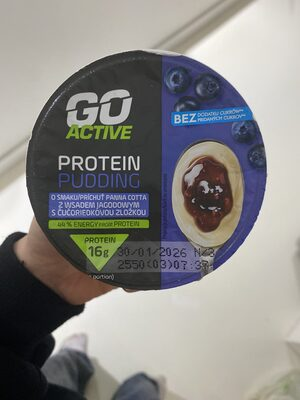
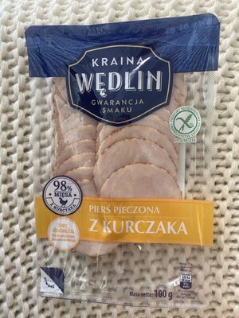
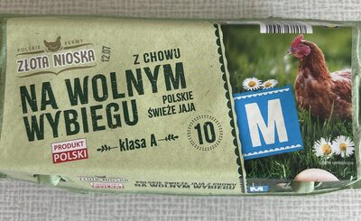
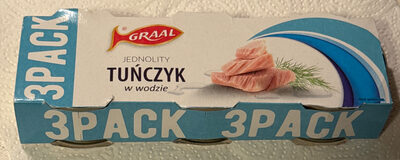
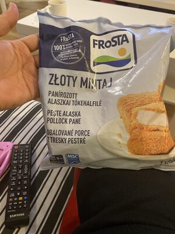

Najlepsze źródła białka w Biedronce
Go Active, Delikate i budżetowe klasyki pod makro
Asortyment i ceny zmieniają się z gazetką. Poniżej typowe kategorie i marki własne, które regularnie wracają na półki. Makro pochodzi z bazy Proteiner (wartości na 100 g) — zawsze sprawdź etykietę konkretnego opakowania.
Biedronka to najgęstsza sieć w Polsce — tu najczęściej łapiesz codzienną bazę białka bez planowania hipermarketu. Siła marki własnej to linie Go Active (pudingi i nabiał proteinowy) oraz Delikate (twaróg, nabiał), plus budżetowe klasyki: pierś, jaja, tuńczyk.
Produkty warte uwagi

Go Active Protein Pudding ~16 g białka/porcja (puding) Twaróg chudy Delikate
~17–18 g / 100 g
Twaróg chudy Delikate
~17–18 g / 100 g

Pierś z kurczaka ~23 g / 100 g
Jaja Pełnowartościowe białko na śniadanie
Tuńczyk w wodzie ~21 g / 100 g Serek wiejski Szybka kolacja / przekąska Szynka drobiowa
Sprawdź tłuszcz na 100 g
Szynka drobiowa
Sprawdź tłuszcz na 100 g

Mintaj Tanie białko z rybyZdjęcia produktów: społeczność Open Food Facts (ODbL) oraz redakcja Proteiner — przykładowe opakowania z asortymentu; oferta zmienia się w czasie.
Jak wybierać w Biedronce
- Białko na 100 g — im wyższe przy niskim tłuszczu, tym lepiej na redukcję.
- Kalorie — twaróg chudy i Go Active wygrywają z deserowymi „proteinami” z cukrem.
- Cena za 100 g białka — zobacz ranking ceny białka.
- Sól i cukier — wędliny i jogurty smakowe potrafią psuć dzienny bilans.
- Filet / pierś z kurczaka — bierz opakowania w promocji „kg”, nie najmniejsze tacki.
- Twaróg Delikate — klasyka polskiej redukcji; porównaj z kartą twarogu.
- Go Active — pudingi i nabiał; unikaj wersji deserowych z cukrem.
- Tuńczyk w wodzie wygrywa z olejem przy tym samym białku.
Koszyk na 2–3 dni
- 1 kg piersi z kurczaka + 10 jaj
- 2× twaróg chudy + 2× skyr / Go Active
- 2 puszki tuńczyka w wodzie
- mrożone brokuły / mieszanka warzyw
To wystarczy na śniadania nabiałowe i obiady „klasik siłowni” z planowania posiłków.
Inne sieci i dalej
- Źródła białka w Lidlu
- Źródła białka w Auchan
- Źródła białka w Carrefour
- Przegląd 4 sieci
- Planowanie posiłków · Kalkulator
Na skróty: w Biedronce celuj w pierś + twaróg Delikate / Go Active + jaja + tuńczyk w wodzie. Reszta to detale etykiety.